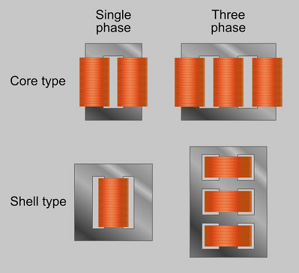
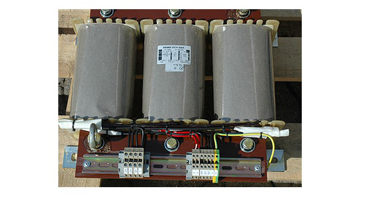

Transformer
What is a Transformer?
A transformer has a primary coil to which input is given and a secondary coil from which the output is collected. Both of these coils are wound on a core material. Usually an insulator forms the Core of the transformer.
• Np = Number of turns in the primary winding
• Ns = Number of turns in the secondary winding
• Ip = Current flowing in the primary of the transformer
• Is = Current flowing in the secondary of the transformer
• Vp = Voltage across the primary of the transformer
• Vs = Voltage across the secondary of the transformer
• Φ = Magnetic flux present around the core of the transformer.
Transformer in a Circuit
The following figure shows how a transformer is represented in a circuit. The primary winding, the secondary winding and the core of the transformer are also represented in the following figure.
THence, when a transformer is connected in a circuit, the input supply is given to the primary coil so that it produces varying magnetic flux with this power supply and that flux is induced into the secondary coil of the transformer, which produces the varying EMF of the varying flux. As the flux should be varying, for the transfer of EMF from primary to secondary, a transformer always works on alternating current AC.
Step-up and Step-down
Depending upon the number of turns in the secondary winding, the transformer can be called as a Step up or a Step down transformer.
The main point to be noted here is that, there will not be any difference in the primary and secondary power of the transformer. Accordingly, if the voltage is high at secondary, then low current is drawn to make the power stable. As well, if the voltage in the secondary is low, then high current is drawn so as the power must be same as the primary side.
Step Up
When the secondary winding has more number of turns than the primary winding, then the transformer is said to be a Step-up transformer. Here the induced EMF is greater than the input signal.
Step Down
When the secondary winding has lesser number of turns than the primary winding, then the transformer is said to be a Step-down transformer. Here the induced EMF is lesser than the input signal.
Turns Ratio
As the number of turns of primary and secondary windings affect the voltage ratings, it is important to maintain a ratio between the turns so as to have an idea regarding the voltages induced.
The ratio of number of turns in the primary coil to the number of turns in the secondary coil is called as the “turns ratio” or “the ratio of transformation”. The turns ratio is usually denoted by N.
Types of Transformers
Single and three phase transformers
Air-core Transformer
Iron Core Transformers
Auto Transformer